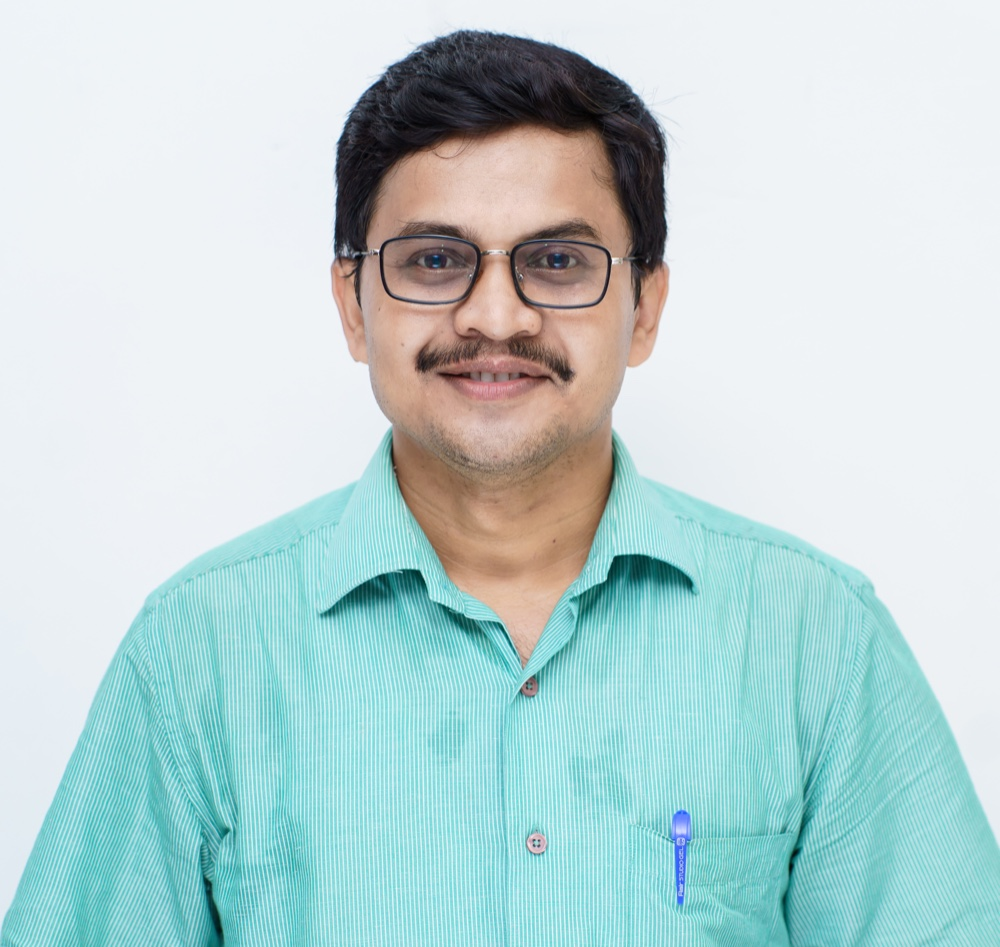
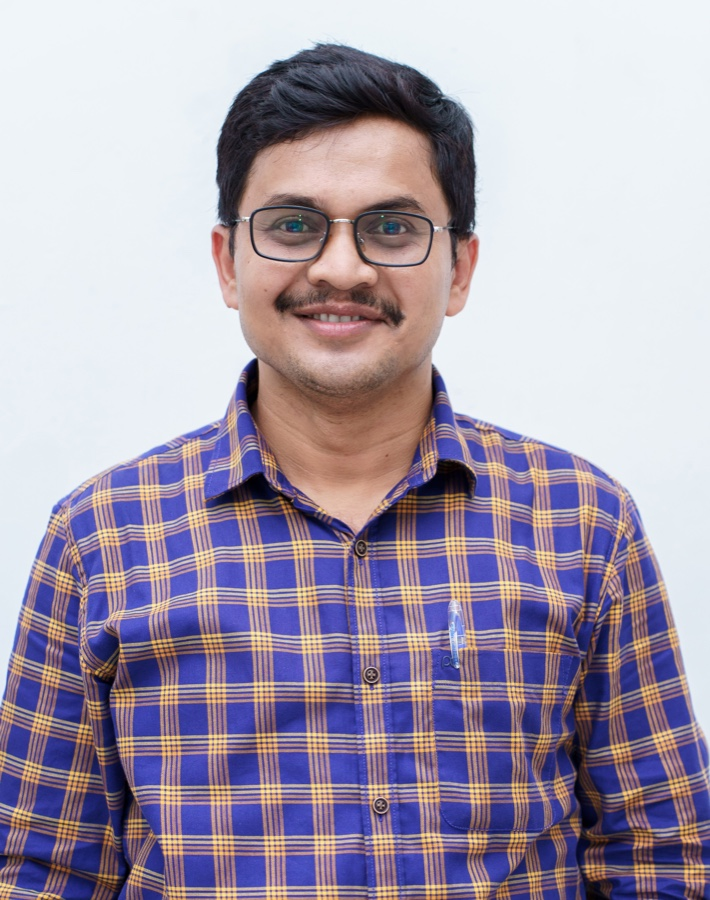

Professor and Head of the Computer Engineering Department
Professor and Head of the Department of Computer Engineering, Mizoram University (A Central University), Aizawl — with over 18 years of teaching, research and academic leadership across India's premier central institutions.

“Behind every doctor, engineer, scientist, and leader, there is a teacher. Teaching is the profession that builds all professions.”

About
Prof. Ajoy Kumar Khan is a Professor and Head of the Department of Computer Engineering at Mizoram University, a Central University in Aizawl. His work sits at the intersection of applied cryptography and information security — from defending smart cards against side-channel attacks to securing the IoT, the cloud, and the post-quantum future.
Over an academic career spanning Assam University, IIT Guwahati, NITTTR Kolkata and Mizoram University, he has authored 80+ research articles, supervised 19 doctoral scholars, led seven government-funded research projects, and been granted a German patent. He completed his post-doctoral work in Digital Forensics at IIT Bhilai.
Ajoy Kumar Khan Professor & Head, Dept. of Computer Engineering, Mizoram University
Research Interests
A research programme built around protecting data and computation — across devices, networks and the boundary of classical and quantum computing.
Lightweight ciphers, cellular-automata & chaotic-map image encryption, and modular-exponentiation hardening for real systems.
Power-analysis attacks and countermeasures — blinding, randomized exponents and resilient RSA/CRT-RSA implementations.
Post-doctoral focus at IIT Bhilai — forensic models for QR codes, mobile apps and identity-fraud investigation.
Secure SDN control planes, intrusion detection, key management for WSN/IoT and authentication for wireless mesh networks.
Public data auditing, signature-based integrity verification and storage-level data integrity in cloud computing.
Quantum-resistant keys and QKD protocols, neural cryptography, and blockchain for trustworthy distributed systems.
Academic Journey
Indian Institute of Technology, Bhilai
Assam University, Silchar (A Central University)
University of Calcutta, Kolkata
Mizoram University, Aizawl
University of Calcutta, Kolkata
R. K. Mission Vidyamandira, Belur Math
Dept. of Computer Engineering, Mizoram University (Central University)
Dept. of Computer Engineering, Mizoram University (Central University)
NITTTR, Kolkata (A Central Institute)
Dept. of Computer Engineering, Mizoram University
Mizoram University, Aizawl
Assam University, Silchar
Coordinator of the North-East Nodal Centre for IBITF Projects at IIT Bhilai (sponsored by DST, Govt. of India), and an alumnus of the “Nurturing Future Leadership Programme” at IIM Visakhapatnam, sponsored by the Ministry of Education. Invited as Guest of Honour by MeitY for state-level capacity-building initiatives.
Former Head of Department · Conference Organizing Chair · DST Project Investigator